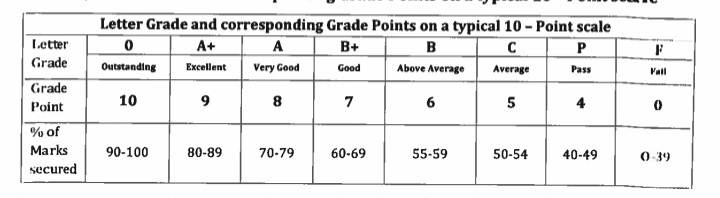
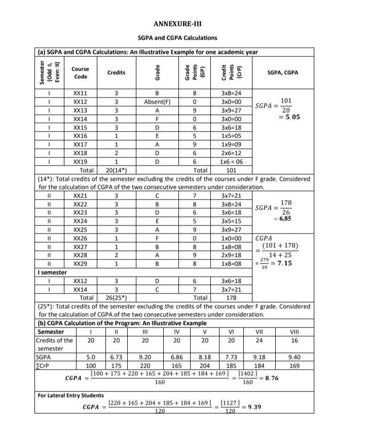

This is a measure of the cumulative performance of a student of all semesters and is computed from the 2nd semester onwards. It is a measure of the overall cumulative academic performance of a student over the entire span of the academic program. CGPA is not an arithmetic mean a but weighted mean. It is also a number that lies between 0 and 10.
It is a measure of academicperformance of a student in a semester. It is the weighted average or weighted mean of the grade pointsobtained by a student in the various courses of any semester. It results in a number that liesbetween 0 and 10.It shall be expressed up to two decimal places.
A unit or weightage by which the Coursework is measured. It represents the number of hours of instructions prescribed per week. One credit is equivalent to one hour of lecture or two hours of laboratory/practical Courses/ tutorials/ fieldwork etc., per week.
Refers to a numerical weightage allotted to each letter grade on a 10-pointscale against a range of percentage of marks secured by students in a course.
1)Know your marks from the VTU website and credits for all the subjects.
2)For the marks which you got, identify the Grade points for each of the subjects.
3)Now multiply the credits and the grade points of the each subject.
4)Add all the multiplied result and the sum which we get by adding these, we need to divide this sum with
total number of credits.
5) The result which you will get is the SGPA of that particular Semester.
6)For the CGPA you need to add Grade points of all the semesters and divide it with sum of all the credits
of the semesters.
The broad information is given in this Image.
